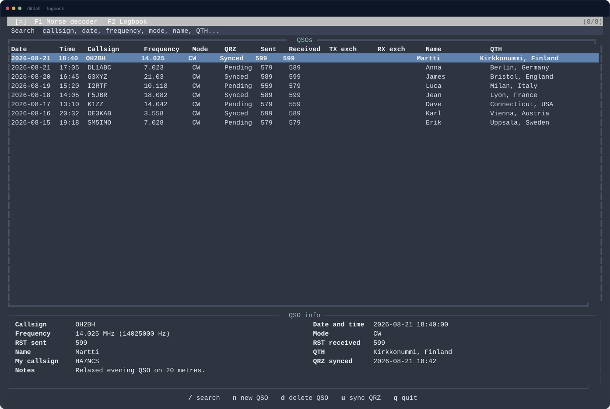
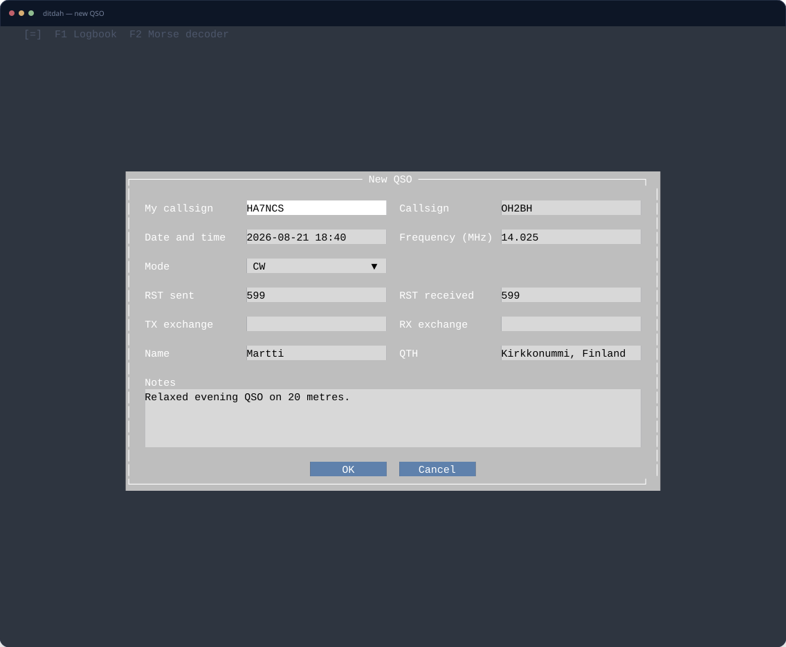

02
Logbook + QSO editor
When you make the contact, log it.
Move the callsign straight into a new QSO, fill in the report and anything else you want to remember, then save it locally. If you use QRZ.com, completed contacts can be synchronized from the same logbook.
- Prefilled QSO from the decoded callsign
- Simple local logbook with search
- Optional QRZ.com lookup and synchronization

